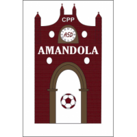

Quanto alcol consumi ammirando le montagne?Vista da piazz'alta
Non vergognarti del tuo passato, sei nato in mezzo al nulla e probabilmente ci morirai. Esaurisci la totalità della tua esistenza in un limbo di alcolismo e psicofarmaci. La tua formazione in questo posto ti ha portato a serie malattie mentali e fisiche ma non demordere, avrai sempre le montagne, le tue diana rosse e tanta, tanta, tanta disperazione!
News dalla rete
Lo sapevi?

CPP
è dura commentare un finale di stagione come questo, la delusione è forte, anche se siamo consapevoli di aver dato tutto e di più.
Per ora mi limiterò a fare una "fredda" cronaca, più avanti, a mente fredda, si potrà fare un bilancio di quanto fatto durante questo campionato.
Iniziamo abbastanza contratti, forse troppo, la tensione si vede nei pochi passaggi riusciti, gli avversari vanno molto di più e infatti passano in vantaggio dopo pochi minuti per una indecisione del nostro portiere e raddoppiano poco dopo su una bella azione che ci trova scoperti un difesa.
Sembra che non ci sia storia, invece piano piano iniziamo a giocare più sciolti e abbiamo anche le nostre belle occasioni che non sfruttiamo a dovere.
Nel secondo tempo entriamo ancora piu convinti dei nostri mezzi e accorciamo con Stefano Buratti dopo una mischia in area su palla da fermo e abbiamo anche altre occasioni per pareggiare, come allo stesso tempo gli avversari hanno le loro chances per allungare, ma siamo tutti poco precisi.
I cambi cercano di scuotere un po' l'ambiente ma rimaniamo nei minuti finali in dieci per l'espulsione di Danilo Forconi e poi anche di Paolo Tossici (chiusura di una lunga carriera? Chi può dirlo?) dalla panchina, dopo un alterco con l'arbitro che, a voler essere buoni, a volte ha sorvolato su episodi lampanti a nostro favore, ma questa non deve essere una scusante per una prestazione iniziata male ma finita in crescendo fino al rigore in pieno recupero per il ASD Mozzano City e che fissa il risultato sul 1-3 finale.
Ringraziamo il numerosissimo pubblico accorso, sia per noi che per il Mozzano City, nonostante l'accavallarsi di altri eventi, che si è comportato in modo civile e corretto.
Complimenti al Mozzano City per la promozione raggiunta e in bocca al lupo per la prossima stagione.
A presto per il bilancio stagionale
Questo articolo non ha contenuto, solo il volto di Cesare Marinangeli Sí, hai capito bene, proprio Cesare Marinangeli